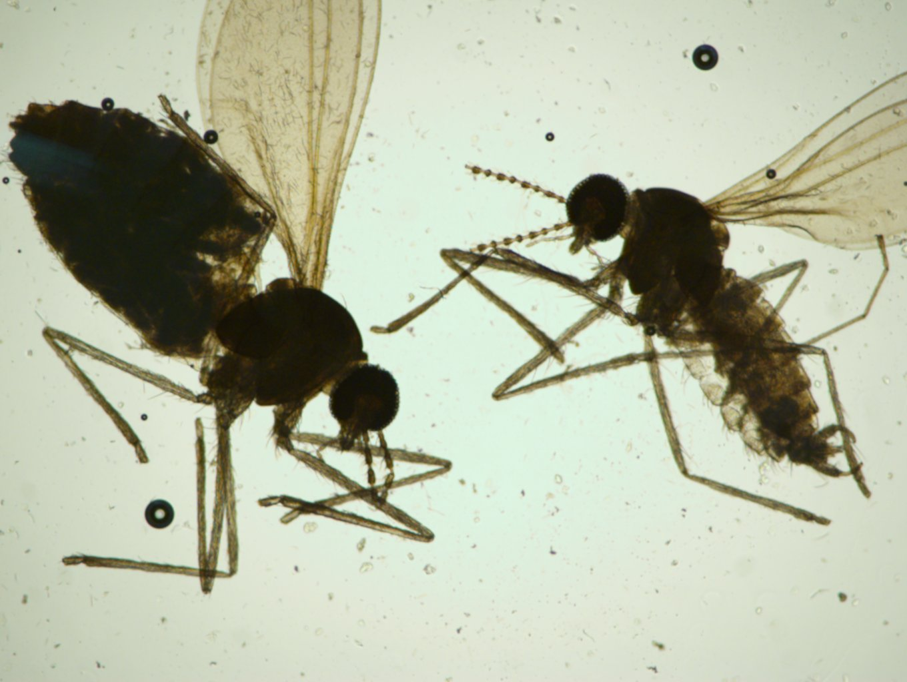

Sobre las agallas
¿Qué son las agallas?
Las agallas (cecidias) son estructuras anómalas en tejidos vegetales...
Características principales
- Cada morfotipo de agalla es único...
- Cada especie de insecto es específica...
Importancia científica
El estudio de las agallas proporciona información valiosa...
Galería
Aquí podrás ver imágenes y subir las tuyas propias.
Agregar imagen a la galería




Investigaciones
Estudio en Guanacaste
Entre 2010 y 2012 se realizó un inventario...
131
morfotipos de agallas identificados
44
familias de plantas hospederas
Hallazgos principales
- Fabaceae fue la familia con más agallas
- Las hojas fueron el órgano más afectado
Cecidiario
Se estableció un herbario especializado...
- Especímenes secos
- Muestras en etanol
- Colección de insectos
- Base de datos digital
Contacto
Para más información sobre el herbario.
Contáctanos